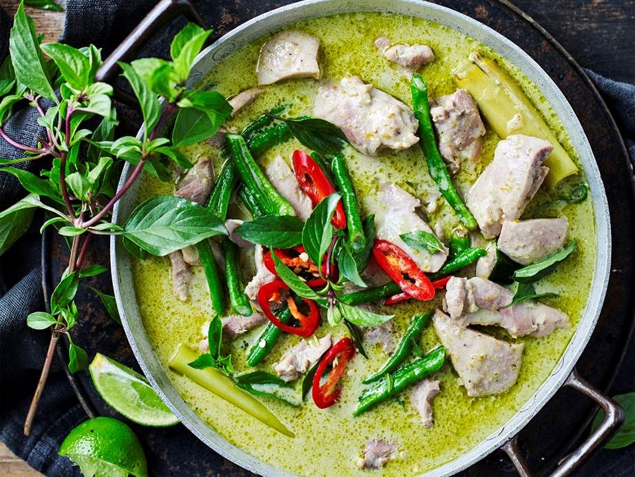

Home
Green Curry

Description
Ever wondered how to make authentic thai green curry, but didn't know how? Perhaps didn't even know what it tastes like? Well, let me fill you in on a little secret:
I've done the painstaking work of going to a cooking class in CHiang Mai, with a coach constantly overloading my dish with chilli since she thought I really like spice (I do, just not 4 chilis in one bowl ;w;).
Either Way, it was good! I am here to share how to do it authentically and I guess you'll know how to do it too!
Ingredients
- Rice (washed and boiled)
- Green Eggplant (local to Thailand)
- Fresh Thai bergamot leaves
- Fresh Thai basil
- Green chillies
- Galangal
- Makru / Lime
- Cilantro
- Lemongrass
- Shallot & Garlic (minced)
- Mushroom paste
- Sweet soy sauce
- optionally, Roasted coriander seeds, cumin seeds, white peppercors
- Palm sugar if you like a gentler taste
- Coconut milk
- Tofu
Steps
- Pack pretty much all veggies for the paste into a mortar and grind like your life depends on it.
- Slowly boil the paste with some palm oil in a pot and add in the coconut milk slowly (use low heat).
- Once the milk has been incorporated, add in soy and mushroom sauce to season to taste. Potentially add salt and palm sugar.
- Add in protein and green eggplants. Boil the curry properly now and pay attention to any reduction going on.
- Once cooked, serve with white rice, garnish with basil and bergamot leaves, potentially red chili if you like contrast.
- Enjoy your food lol.